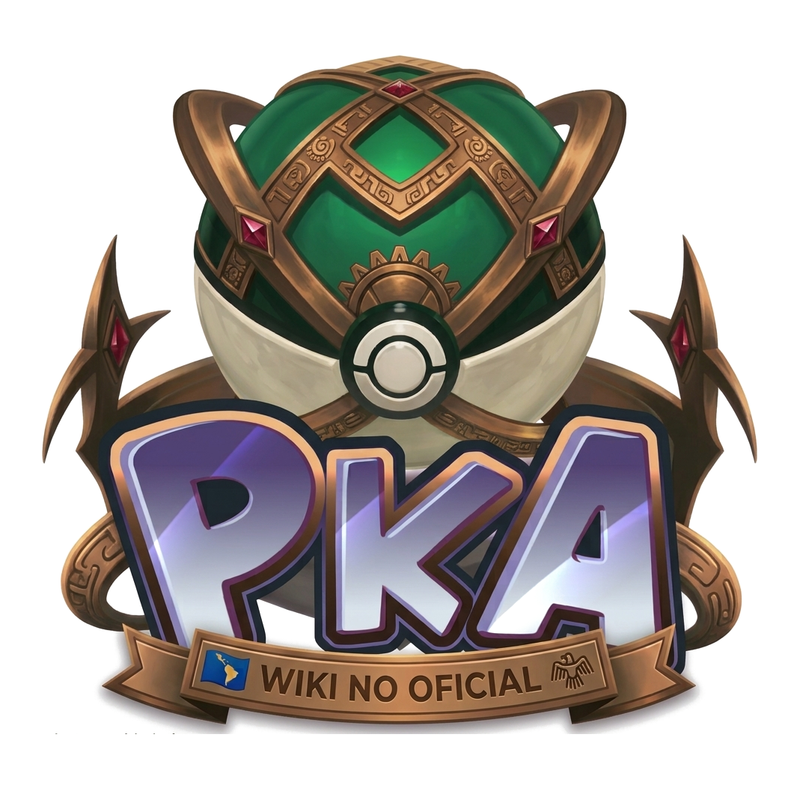

<span data-i18n="common.0064.950a39b6"></span><html lang="es"><head><meta charset="utf-8"/><meta content="width=device-width,initial-scale=1" name="viewport"/><meta content="Wiki comunitaria no oficial en español de PokeAlliance: Pokédex, hunts, drops, quests, sistemas y guías." name="description"/><title data-i18n="quest-mewtwo-clones.0001.0df384fc"></title><link href="assets/styles.css" rel="stylesheet"/><meta content="#071625" name="theme-color"/><link href="assets/favicon-32.png" rel="icon" sizes="32x32" type="image/png"/><link href="assets/apple-touch-icon.png" rel="apple-touch-icon"/><link href="manifest.webmanifest" rel="manifest"/></head><body data-matrix="" data-page=""><header class="topbar"><div class="shell nav"><a class="brand" href="index.html"><span class="brandmark"></span><span data-i18n="common.0043.6fbe3f50"></span></a><nav class="navlinks"><a data-i18n="common.0029.4f70d8c3" href="index.html"></a><a data-i18n="common.0044.cc6fda44" href="pokedex.html"></a><a data-i18n="common.0035.7041bfe3" href="megastones.html"></a><a data-i18n="common.0009.f32c2dbc" href="addons.html"></a><a data-i18n="common.0032.519707b8" href="localizaciones.html"></a><a data-i18n="common.0058.090ec5f5" href="tasks.html"></a><a data-i18n="common.0038.710cbf3b" href="npcs.html"></a><a data-i18n="common.0018.89eabb17" href="dungeons.html"></a><a data-i18n="common.0024.0017eb27" href="guias.html"></a><a data-i18n="common.0055.efd933bd" href="sistemas.html"></a><a data-i18n="common.0013.5945467e" href="changelogs.html"></a><a data-i18n="common.0056.15c47718" href="sugerencias.html"></a><a data-i18n="common.0022.03688ba6" href="faq.html"></a></nav><button aria-label="Abrir menú" class="menuBtn">☰</button></div></header><main><section class="pageHead"><div class="shell guide"><span class="eyebrow" data-i18n="common.0051.1defd194"></span><h1>Mewtwo Clones Quest</h1><p class="guideIntro" data-i18n="quest-mewtwo-clones.0002.4019fbc1"></p><nav class="toc"><b data-i18n="common.0019.de25133f"></b><div class="tocLinks"><a data-i18n="quest-mewtwo-clones.0003.2ca5a6f9" href="#llegar"></a><a data-i18n="common.0029.4f70d8c3" href="#inicio"></a><a href="#dificultad">Dificultad</a><a href="#reglas">Reglas</a><a href="#buffs">Buffs</a><a data-i18n="common.0053.e0307907" href="#recompensas"></a></div></nav></div></section><section class="section"><div class="shell guide"><div class="metaGrid"><div class="meta"><span>Grupo</span><strong data-i18n="quest-mewtwo-clones.0004.c42282c3"></strong></div><div class="meta"><span>Easy</span><strong>Lvl 150+</strong></div><div class="meta"><span>Medium</span><strong>Lvl 300+</strong></div><div class="meta"><span>Hard</span><strong>Lvl 420+</strong></div></div>
<h2 data-i18n="quest-mewtwo-clones.0005.2ca5a6f9" id="llegar"></h2><p><span data-i18n="quest-mewtwo-clones.0006.0343a5c9"></span> <strong>Mandarin Island</strong><span data-i18n="quest-mewtwo-clones.0007.cd80eb4b"></span> <strong>Vikings</strong> <span data-i18n="quest-mewtwo-clones.0008.7239a9aa"></span></p><div class="imgPair"></div>
<h2 data-i18n="quest-mewtwo-clones.0009.cc154454" id="inicio"></h2><p data-i18n="quest-mewtwo-clones.0010.1d9cbb52"></p>
<h2 id="dificultad">Dificultades</h2><div class="guideTable"><table><thead><tr><th>Dificultad</th><th data-i18n="quest-mewtwo-clones.0011.3d9c4671"></th><th>Referencia</th></tr></thead><tbody><tr><td>Easy</td><td>150</td><td data-i18n="quest-mewtwo-clones.0012.e3121384"></td></tr><tr><td>Medium</td><td>300</td><td data-i18n="quest-mewtwo-clones.0013.8369378d"></td></tr><tr><td>Hard</td><td>420</td><td data-i18n="quest-mewtwo-clones.0014.49829a77"></td></tr></tbody></table></div>
<h2 data-i18n="quest-mewtwo-clones.0015.46cb07cd" id="reglas"></h2><ul><li data-i18n="quest-mewtwo-clones.0016.f41ba3e6"></li><li data-i18n="quest-mewtwo-clones.0017.425a4fa8"></li><li data-i18n="quest-mewtwo-clones.0018.1f581d38"></li><li data-i18n="quest-mewtwo-clones.0019.36910d9e"></li></ul><div class="callout warn" data-i18n="quest-mewtwo-clones.0020.8cc14a13"></div>
<h2 data-i18n="quest-mewtwo-clones.0021.97232402" id="buffs"></h2><p data-i18n="quest-mewtwo-clones.0022.2fbb3262"></p>
<h2 data-i18n="common.0053.e0307907" id="recompensas"></h2><p data-i18n="quest-mewtwo-clones.0023.dd75681a"></p></div></section></main><footer class="footer"><div class="shell footerRow"><div><b data-i18n="common.0043.6fbe3f50"></b><br/><span data-i18n="common.0050.b002c49f"></span></div><div><span data-i18n="common.0027.f31efaaa"></span><br/><span data-i18n="common.0033.806f69ed"></span></div></div></footer><script src="data/wiki-data.js"></script><script src="assets/pokelog-icons.js"></script><script src="assets/app.js"></script><script src="assets/i18n.js"></script><script src="assets/enhancements.js"></script></body></html>